0:05 Hello, everyone. And welcome to lecture 8 of CME 296. So today is a special day because as you know, today is the last lecture of this entire class. So the menu for today will be a little bit different. What we'll do is we'll divide this lecture into two parts. In the first part, we'll try to piece together everything we've seen in the class up until now
0:36 and see what we can take away from it. And in the second part, what we'll look at
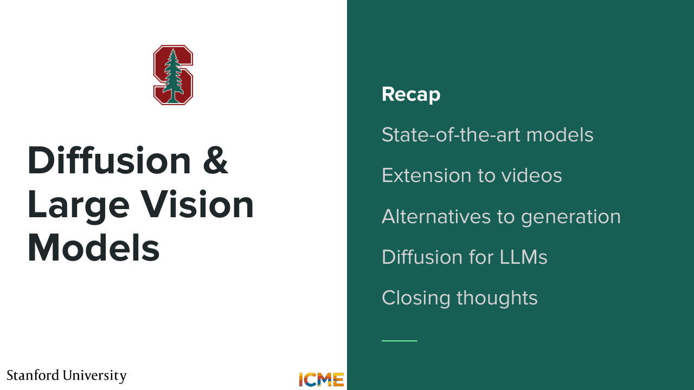
0:43 is adjacent fields where we can apply what we've have learned.
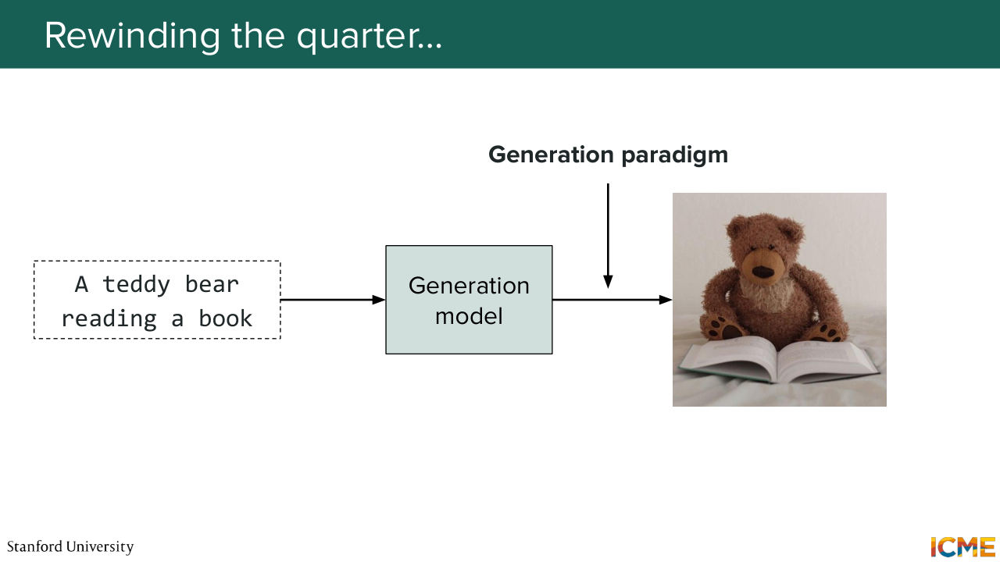
0:49 Does that sound good to you? So with that, what we'll do is we'll start with the first part, which is just piecing together everything we've seen this quarter. And the whole goal of this class has been to learn how to generate images. So, for instance, given an input prompt, how can we generate an image that is quite aligned with the prompt as input.
1:21 And of course, there is just a lot of dimensions we can look at. So this class has been about decomposing the fact of learning how it works into tractable parts. And if you remember, the first three lectures
1:38 were about just understanding how we could generate images. Just let's suppose we have a black box model. What is the paradigm that would allow us to just generate images. So the first lecture was about diffusion, just learning how we could do that using the diffusion paradigm. And if you remember the first thing we said was,
2:09 what could be a good starting point for us to generate those images? So if you think about it, the images that we want to generate they are a part of a data distribution that we do not know. And that data distribution can be complex, and it's difficult to sample from it. So one thing we said was, what are some distributions
2:35 that we know how to sample from? So one such distribution was the Gaussian distribution. And what we said was maybe in order for us to sample from this complicated data distribution, one thing we could do could be to sample from an easy distribution and then
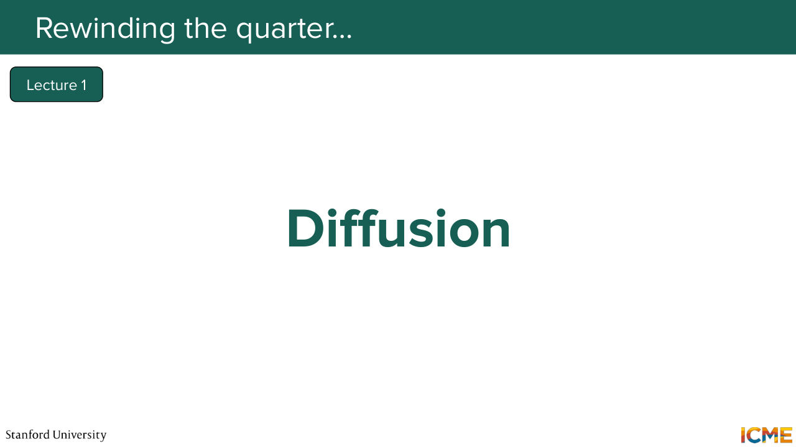
2:58 make our way up to the complicated data distribution. So in this first lecture, what we said was let's represent images with just a multi-dimension variables that we could denote x.
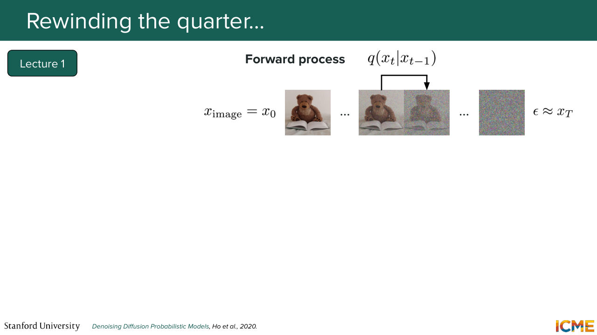
3:14 And what we said was in order for us to learn how to go from Gaussian noise
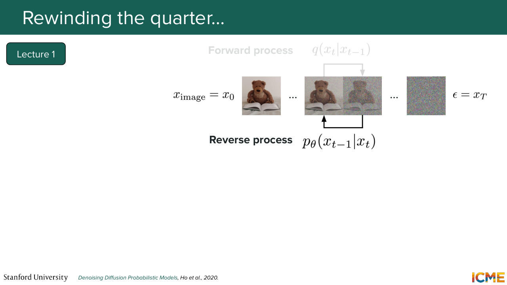
3:24 to clean images, what we'll do is we will come up with a forward process that we define that will allow us to corrupt clean images into noise. And the purpose of diffusion is to learn how to reverse that process. So if you remember, the forward process
3:47 was a nice formulation that involves also Gaussian distributions. And so in order for us to derive the form of that reverse process, what we did was we tried to maximize the likelihood of seeing the data
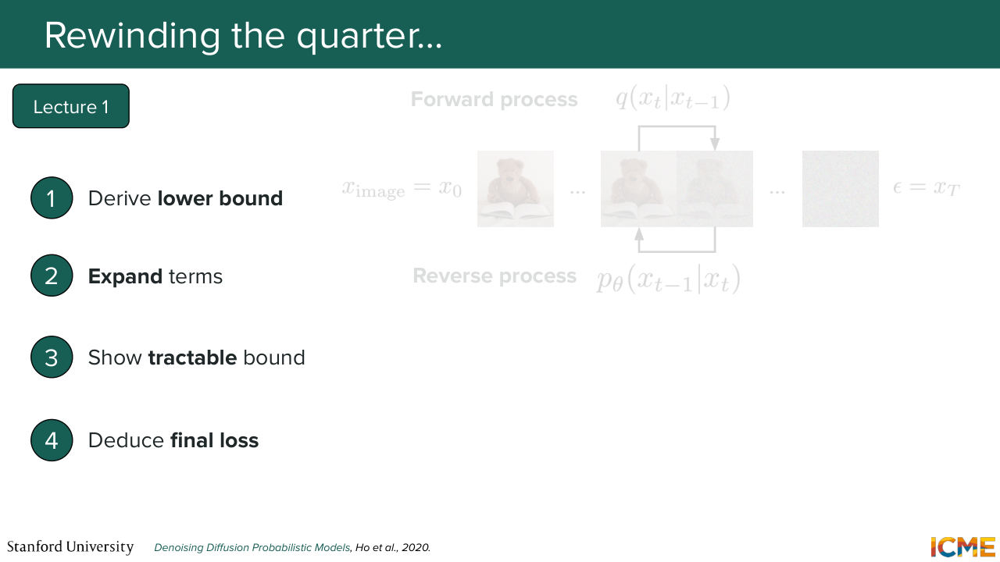
4:10 distribution under p theta. And we went through several steps that allowed us to derive a loss. So if you remember what we said was maximizing the likelihood is actually not tractable. So what we do is we derive a tractable lower bound, which was something where we used the forward process that we
4:35 defined in it. So this lower bound is called ELBO. And what we did is we expanded the terms within that lower bound.
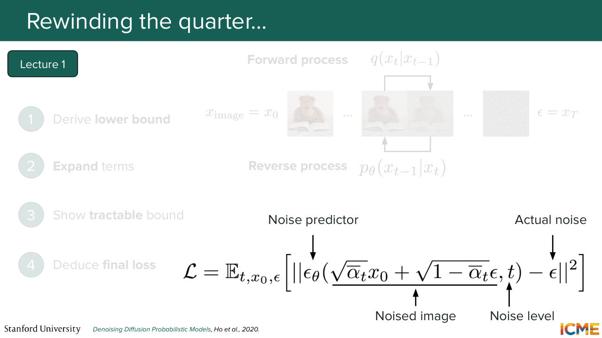
4:47 And we showed that we could actually compute it. It was actually tractable. And we ended up with a loss on us trying to estimate the noise that was added to a given image through this very simple L2 regression loss, which had a noised image as input along with its noise level. And what it was trying to do was to estimate the amount of noise that was added to the image
5:20 or to the noisy image, I should say. So this was a first way of looking at things.
5:28 So diffusion allowed us to go from an easy to sample from distribution, so the Gaussian distribution to the data distribution by learning how to remove the noise. The second lecture was about another way of doing things, which was let's look at this data distribution, not from noise that you need to remove, but more in terms of where you need to go.
6:03 And we looked at a quantity called the score, which was defined as the gradient of the log of p.
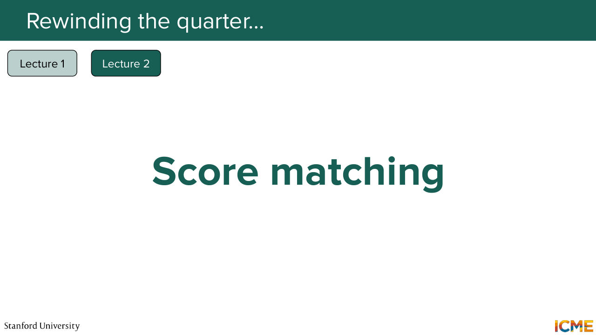
6:11 And we saw that that quantity had nice properties. And in particular, it allowed us to not worry about that normalizing constant that is intractable. And what the score was telling us was where to go in order to land at that data distribution. And in particular, there was a nice formula from Langevin dynamics, which basically
6:38 said that if you knew how to compute the score, then what you could do is sample from noise and make your way to the data distribution. So the whole goal of this lecture was to derive a way to estimate that score. So the problem is the score is not the quantity that we know.
7:05 So what we did was have a way to introduce the Gaussian distribution to some extent so that we can leverage the properties that we know from the Gaussian distribution. And in particular, the fact that we knew how to compute in an analytical way the score of a Gaussian distribution. So what we did is we took observation from the target data
7:36 distributions. And what we did is we noised them. And then we looked at how we could estimate the score of the noise distribution. So we saw that it was something that we could actually compute. But then there was a trade off. The more noise you would put in the data distribution,
8:00 the more your noise data distribution would be far from the data distribution of interest. But then when you do that, you're able to estimate the score of the noise data distribution quite easily. So you have a trade off of you can compute the quantity, but it's not the quantity that you actually want versus if you have only a small amount of noise,
8:29 then the score of that low noise data distribution is actually not something that you can estimate very well. But the target that you want to estimate is closer to the actual quantity that you want. So you had this trade off, and what we said was, well, how about we estimate the score, not just
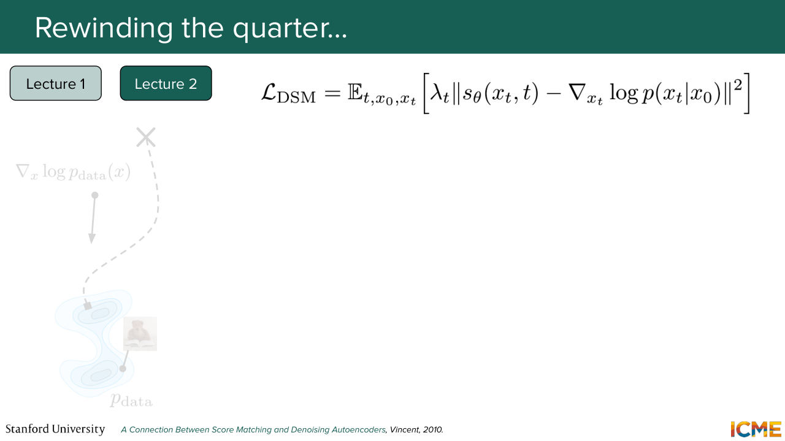
8:55 as a function of where we are in space, but also as a function of data distribution is.
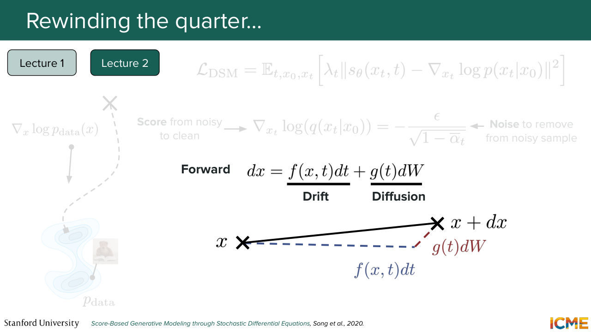
9:05 And we ended up with the de-noising score matching loss, which allowed us to estimate the score of that noisy distribution, given a noisy image and a noise level. And once we did that, we actually saw that this way of looking at things was actually very similar to the way we did in the first lecture
9:33 with diffusion. And we saw that actually the score of the forward process is equal to minus the noise that you added over some coefficient. So both approaches led to similar formulations. And we saw that we actually had this identity. And then what we did was just realized
10:01 that the way we were noising our data distribution was in a discrete way, and that there are many choices that you had to take at the very beginning, such as how many steps you want to take and so on. And so this motivated us to move from discrete formulation to a continuous formulation. So we derived the continuous formulation
10:31 of the forward process, which allowed us to come up with this stochastic differential equation, which is the delta in position during the forward process, which is equal to a drift term that is deterministic, plus a diffusion term, which is stochastic. And here we're using the continuous equivalent of the noise, which as we saw was the Wiener process, dW.
11:04 And you could actually figure out how to move your x when you want it to noise it with respect to these two terms. And we actually saw that the first approach that we looked at in the first lecture and then the second approach that we looked at here were actually special cases of this more generic formula.
11:34 In particular, the DDPM formulation from lecture 1 was a variance-preserving formulation, whereas the one that we saw with the noise condition score networks was actually a variance exploding formulation.
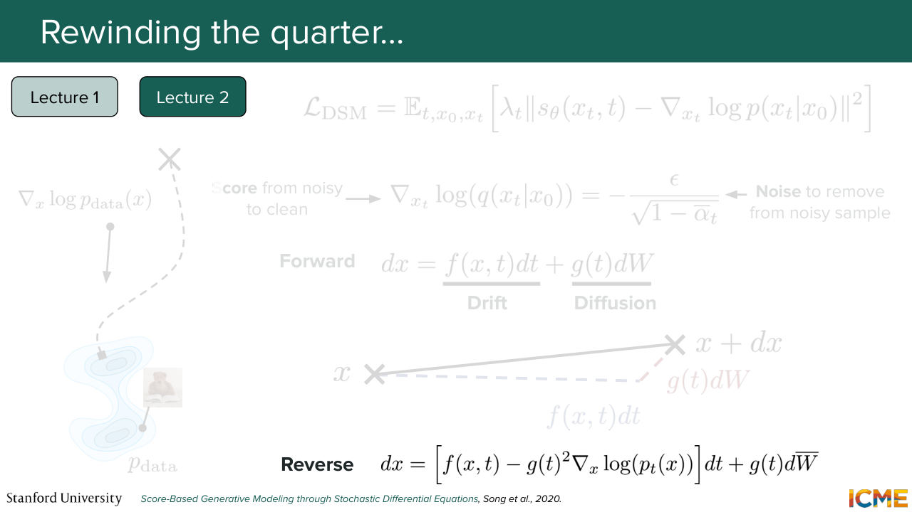
11:53 And then what we did was OK, our goal is not just to noise images. Our goal is to learn the reverse process. And so in order to do that, the nice thing was that in the '80s, we have a nice results that told us that for a given forward process, you could have a corresponding
12:18 reverse process where you actually needed to know the score, which is actually the quantity that we're estimating here. So what we had to do was just to estimate the score in order to reverse the process. So long story short, lecture 1 we saw in order to go from noise to clean, we need to predict the noise to remove.
12:44 In lecture 2, we said, in order to go from noise to clean, we need to know where we want to move towards, which is the score. You can think of the score as a compass that tells you where the data distribution is located.
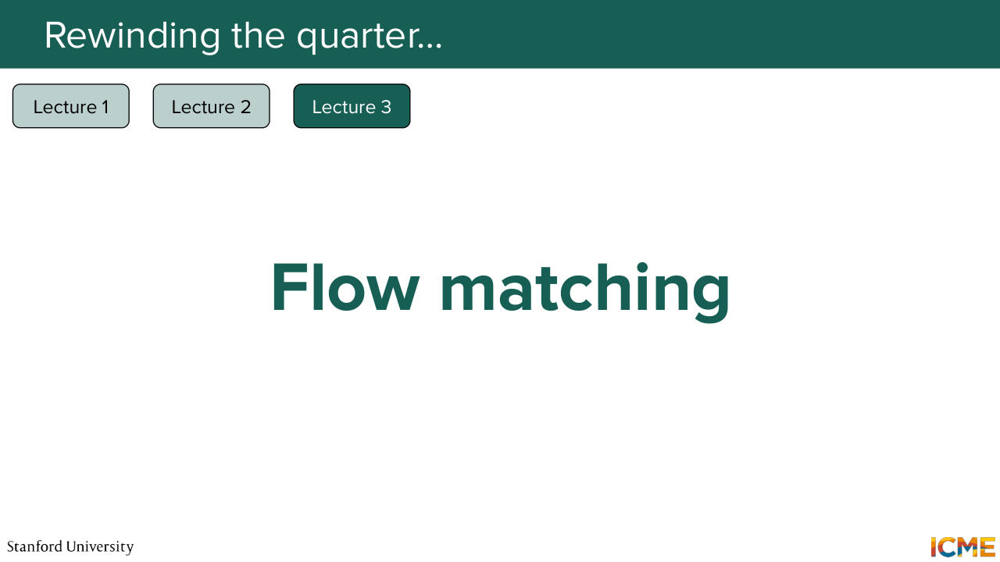
13:02 And then we ended up in the third lecture with a third way of looking at things, which is the flow matching formulation, which actually framed the problem in a different way. So what we did there was to consider the noisy distribution
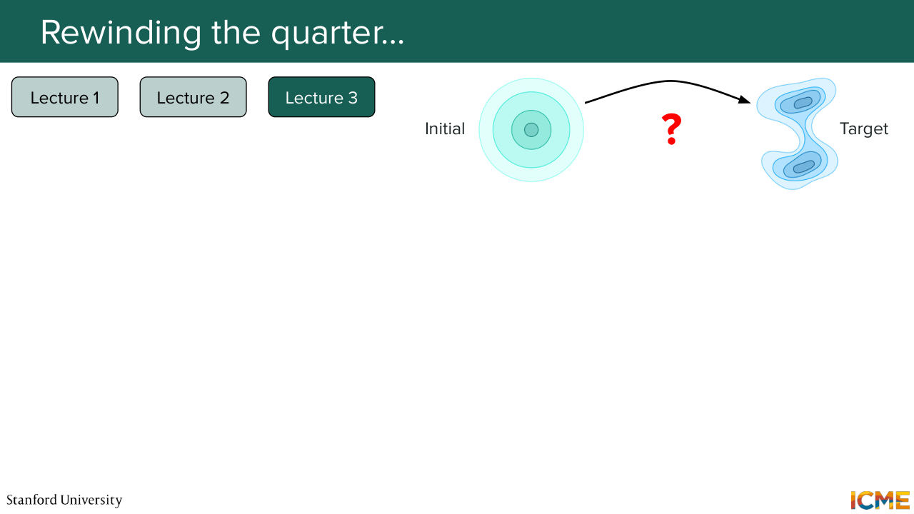
13:23 in the beginning as just an initial distribution, and the data distribution of interest was just a target distribution. And the goal for us was to figure out how to move your probability density from an initial distribution to a target distribution. So that's the flow matching way of looking at things. It's the point of view of mass transport.
13:56 And in particular, there was one quantity that was very important, which is called the vector field or the velocity, which is denoted Ut of x. It is a vector that is defined at every position and at all time t. And what we saw was that in order to move each observations from one point to another, what we had to do was to just follow the vector field.
14:26 So we had this microscopic way of looking at things, which is the ODE that you see here. So the dx over dt, which is equal to the vector field at that time t and at position x. And we also had a second way of looking at this same thing. So the first formulation is the microscopic formulation, which is what is happening to your individual particles.
14:57 The second way of looking at this same thing is at the macro level, where what you say is the evolution of the probability at a given time t is equal to minus the probability flux, which is what constitutes the continuity equation, which just
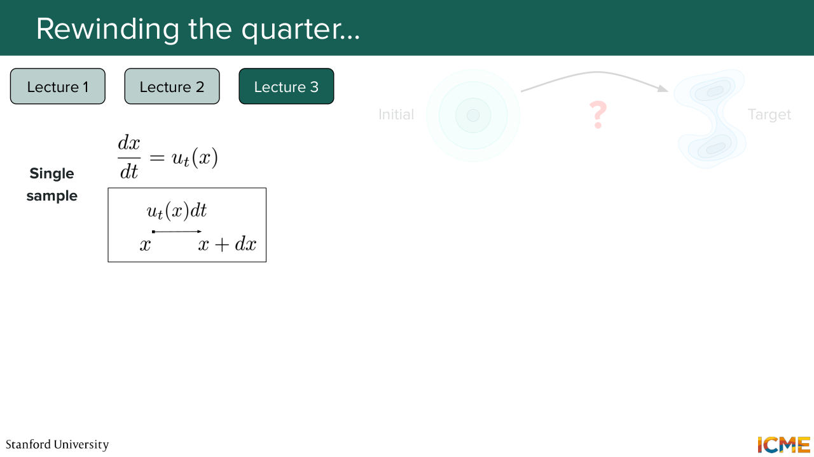
15:21 tells you that you're not losing anything between time t equals 0 and 1.
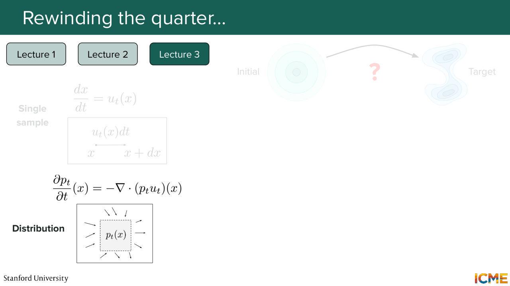
15:28 And the whole point of us going into these formulas was for us to figure out a vector field which would allow us to go from this initial distribution to this target data distribution. So this was the whole point. And in particular, let's assume you know the vector field that you want to estimate. The strategy here would be to have a model that
16:03 estimates the vector field. So here, Ut theta of x. So let's assume you learn such a model. If you do learn such a model, then in order to sample from the complicated data distribution which is p1, what you need to do is to just sample from your easy data distribution p0 and then numerically
16:30 solve the [INAUDIBLE] here between times 0 [INAUDIBLE] using the vector field that you have learned. And we saw that it's actually something that you can do in practice if you construct the target vector field in a way that makes it tractable. So we saw conditional probability paths,
17:01 which were an easier way of looking at this, which is we don't know what the vector field in the general case. How about if we look at a simpler case where we want to move the initial data distribution, not to the target data distribution, but to a single point, which was the conditional probability path that we saw? And we saw that we could obtain a conditional flow matching
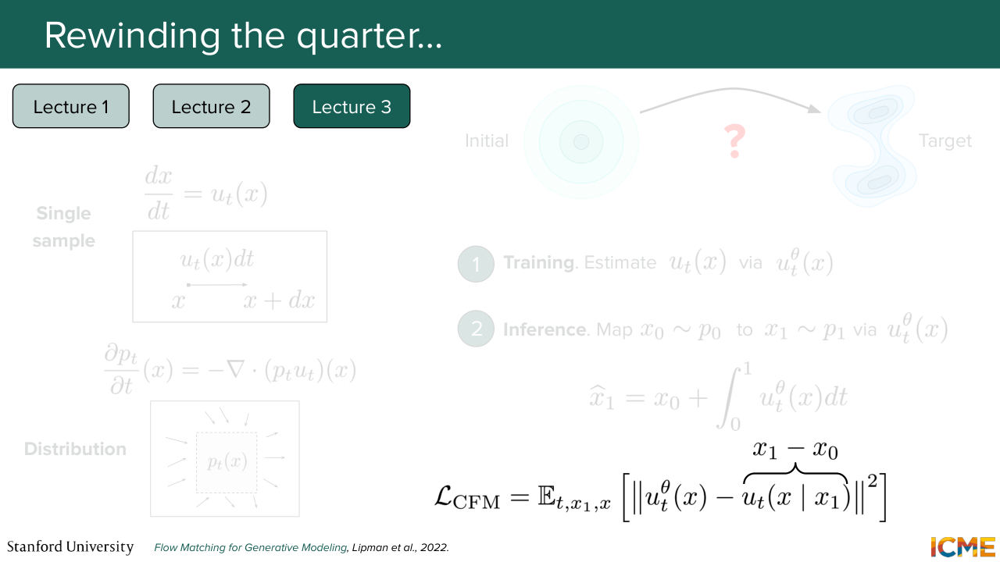
17:34 loss that was equivalent to you learning the vector field that was the aggregate of all these conditional vector fields that allowed you to solve the problem of interest. So these first three lectures were by far the most mathematically challenging. I hope what I said made sense. We spent six hours on this. And I hope I did a good job in 10 minutes to just recap what we did.
18:04 At the end of it, I just want you to remember that so we're in 2026. People nowadays they use flow matching by default. And so if you just want to have something that you want to really master perfectly, I would recommend just really understanding the flow matching part because this is what most models nowadays use.
18:32 In particular, they use a variant that we saw that's called the rectified flow variant, which was an extension of this that allowed the path to be straighter, so that at inference time, you could afford having fewer steps in the numerical solver here so that you can just sample images with fewer steps.
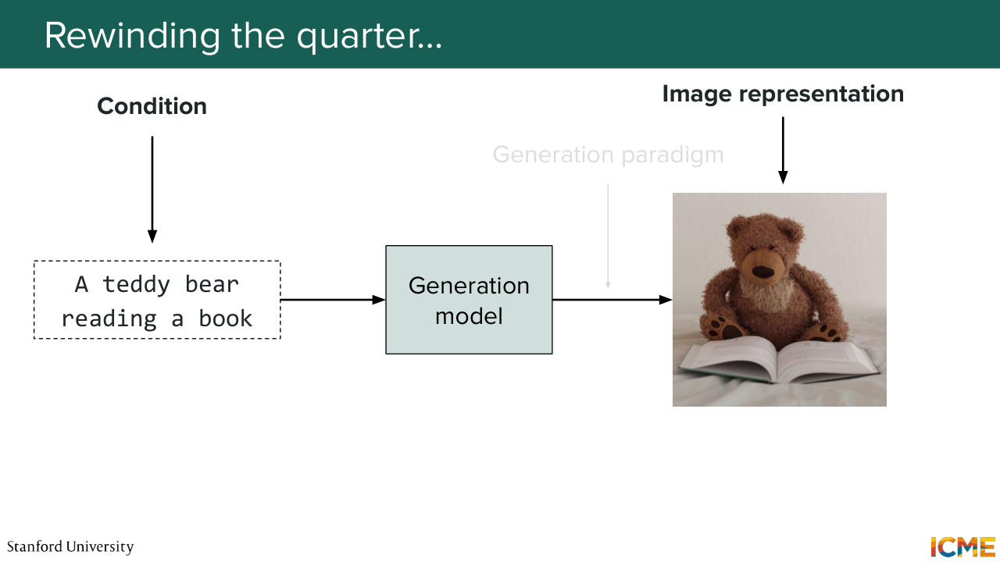
19:03 Oof. So first three lectures, mathematically challenging.
19:08 It was purely for us to learn a paradigm to generate images. But up until that point, we assumed two things. So the first one is we assumed that we were generating images in an unconditioned way. So we didn't have any input prompts. We did not worry about this. And the second thing was we just assumed that we
19:36 had a way to represent images. So we just represented them with x with, I don't know,
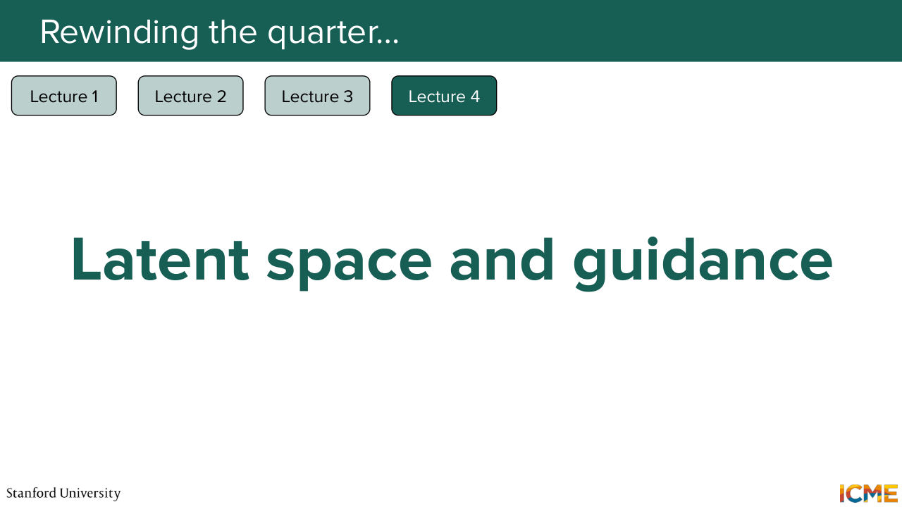
19:42 n dimensional vector. But we did not see what representation would make sense. And this was the focus of lecture 4, which was titled latent space and guidance. And what we saw there was, well, in order to have a meaningful representation of your images, what you want is to have a way to keep only the useful stuff.
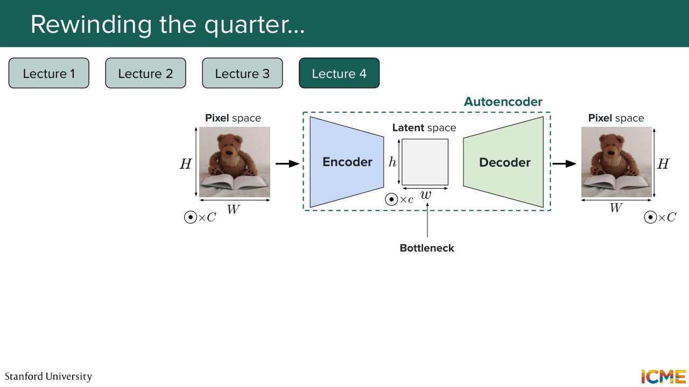
20:14 So how do you do that? Well, in pixel space, you see that you have a pretty large amount of spatial correlation, which means that if you look at a pixel, a lot of the surrounding pixels are more or less of that value. So you can imagine that there is a lot of redundant information in there. So that's number 1. And number 2 is in the pixel space, well,
20:43 the dimensionality is pretty high. So given that the model that you're going to build from it is going to be a function of the dimension of your input, what you want to do is to make sure your input is not too big. So you want to compress the input into something that is only keeping you the useful bits. And in order for us to do that, we looked at a model that was called an autoencoder, whose
21:18 only goal was to learn a way to represent images into a smaller space. That's called the latent space. So here on the slide, you see that you have the image in the pixel space as inputs. And then you have an encoder that does some downsampling operations that gets you some representation of the input image, not in the pixel space, but in a lower dimensional
21:49 space, which is the latent space. And what you do here is to use that lower dimensional representation in order to reconstruct your input. So you have a proxy task, which is how can you reconstruct the input as best as you can by going through this bottleneck. And when you do that, you are indeed
22:18 able to learn a latent space that compresses the information into just fewer dimensions. But then the problem that we encountered was that if you did that, you had no way of controlling the shape of the latent space. And in particular, if you want to learn how to generate images, what you want is to have an easy time at learning it.
22:48 So you don't want a space with spikes here and there and then nothing in between. So what you want is something more at the top of the slide, which is a data distribution that is more compact and well put together. So in order for us to do that, what we did was go back to the way we formulated things
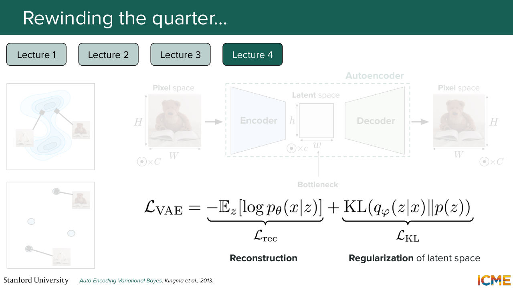
23:16 and add a constraint for us to regularize the latent space. And this was the VAE that we saw-- the variational autoencoder-- which allowed us to structure the latent space in a way that would make our lives easier. And we saw that in order to derive a loss for us to learn that model, we use the same trick as lecture 1, which
23:48 leverages the ELBO. So the evidence lower bound. I'm not going to go into details. But one thing I wanted to say here is we ended up with a loss that had two terms. One was the pixel-wise reconstruction loss, which we had previously, but also a second term that was aiming at structuring the latent space as much as possible to a certain distribution that
24:18 was called the prior distribution, p of z, so that we can have something that looks a little bit more like the top one. Cool. So that was really the focus of that session. And we also learned how to represent the input. So we saw different encoders, in particular transformer-based encoders, including the VIT-- vision transformer.
24:44 And then we saw that there are ways to combine different modalities in the same space,
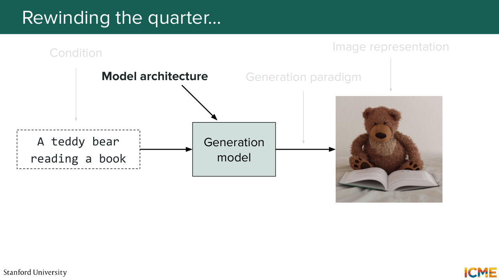
24:50 for instance, with CLIP using a contrastive loss. And then we also saw methods to incentivize our generation to be more aligned with our condition. And here, if you remember, we looked at classifier-free guidance that allowed us to do that.
25:11 Cool. So up until that point, we knew how to generate images in terms of the way we wanted to go about doing this. We knew how to represent the inputs.
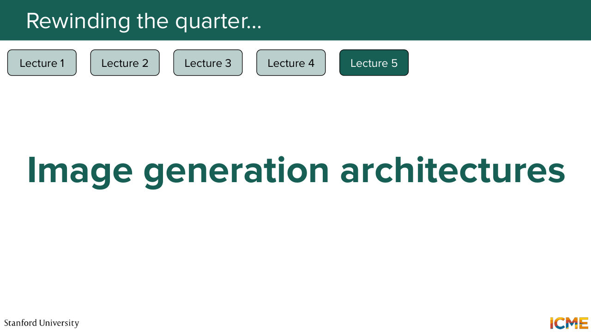
25:24 And we knew how to represent our noisy latents. Well, now the question is, what model are you actually going to use to do that? And this was lecture 5, which was on image generation architectures. And here we took a step back and just reminded ourselves of the problem that we have at hand, which is we have a model.
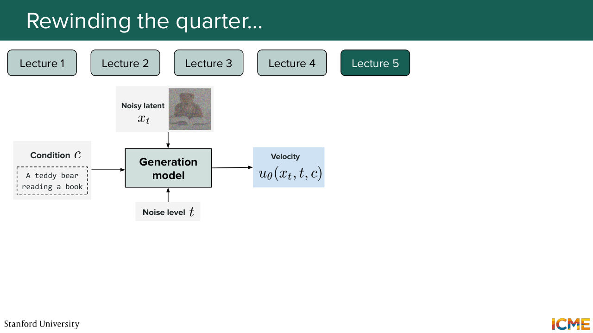
25:53 And what we want to do is to predict a quantity that will allow us to go from noise to clean. So as I mentioned, the paradigm that is by far the most common these days is the flow matching paradigm. So it's, in particular, a model that would predict the velocity. So what we want is a generation model that takes in a noise level, the condition of interest,
26:24 like your user prompt, and then your noisy latent as inputs
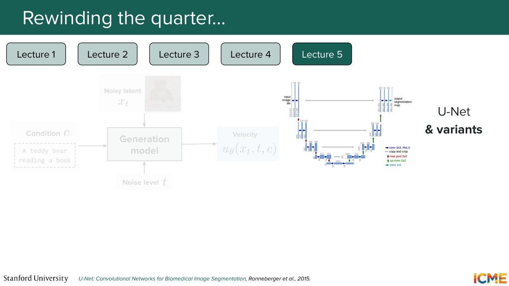
26:30 in order to predict the velocity. And we saw that one popular architecture was the U-Net, which was composed of two main parts. The first one was a downsampling part, which allowed to gain a global understanding of the inputs through downsampling operations, which allowed its receptive field to be bigger and bigger.
27:00 So here what we mean is when you compute the activation map, if you take a single value, what we're saying is that that value was a result of a pretty wide input. So that's the downsampling part. And then the upsampling part was just a way for us to match the shape that we wanted. And we had this copy and crop connections that allowed us to transfer lower level details that
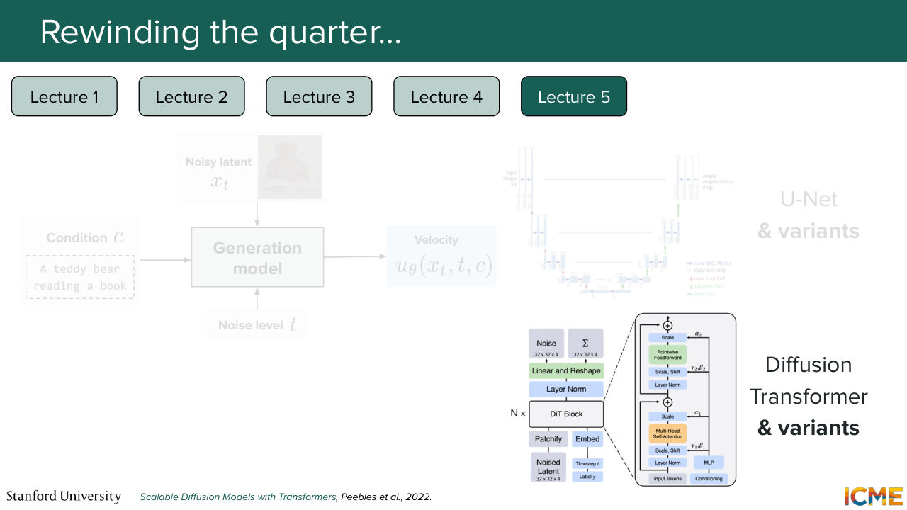
27:33 were computed as part of the downsampling operation. So this was the U-Net. But of course, you know that in 2017, transformers just took the whole field by storm. And there was more and more models that were relying on the transformer and the self-attention mechanism. And it was not long after that the diffusion transformer
28:01 came into play. So in 2022, I believe. So that architecture dealt with a limitation of the U-Nets, which was that patches that were far from one another from the image could not have a direct way of interacting with one another. And in cases, like if you wanted to generate an image, let's say, a teddy bear that looks at himself in the mirror,
28:29 then you would want to have that interaction to figure out the lower level details. And we saw that diffusion transformer was injecting conditions using an adaptive layer norm framework. So it was just modulating the embeddings of the patches. And then we saw that-- today is May 29th 2026.
28:58 So now we have a lot of such models out there. And in particular, there is one specific category that has emerged, which is the multi-modal diffusion transformer, which on top of doing this self-attention mechanism, also considers the condition as part of the joint attention. And we looked at the timeline. So here what's in blue is U-Net. And what's in green is DiT and variants.
29:29 And of course, the timeline is not exhaustive but it is just a way for you to see that nowadays image generation models are almost everyone is relying on the DiT-based architecture. Cool. And then at that stage, we knew how we could generate images.
29:53 We knew how to represent the input. We knew how to represent the latentce. We knew what model to use, but we didn't how to train that model. And that was the focus of lecture 6. And so before digging into the details, one thing we wanted to just align was how we wanted our time step to be sampled during the training, because we had seen back in lecture 1 to 3
30:22 that the time step that we were sampling in order to train our model was drawn from a uniform distribution. And we spent some time just thinking about whether all noise levels are equally hard or not. And we saw that noise levels that are not super noisy, but not towards clean, like those in the middle, were the most difficult because those
30:53 were the places where we had to make important decisions about where to go. And so that's the reason why the fact of sampling from a uniform distribution was not the most optimal. And we saw that there was this distribution called the logit-normal distribution, which is a distribution that focuses much more on the middle steps, was something that was more commonly used these days.
31:26 And we saw that not only that, but the resolution of your images also matter in terms of what the perceived noise is. And in particular, if you want to train a model on higher resolution images, what you want is to make sure to noise your images a bit more than what you did previously, because
31:53 for a given noise level, a lower resolution image will appear as being more noisy compared to higher resolution one.
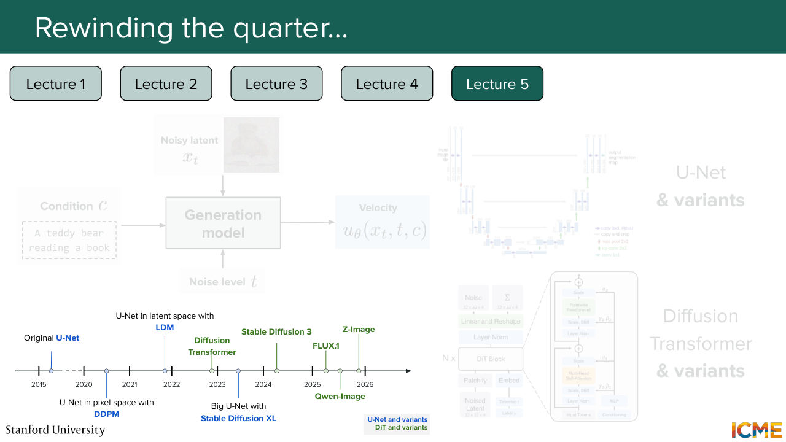
32:03 And we did some math on the blackboard, if you remember, when we computed just the uncertainty around the underlying pixel value. But intuitively, it comes from the fact that there is spatial correlation within your image. So if you have more pixels to represent,
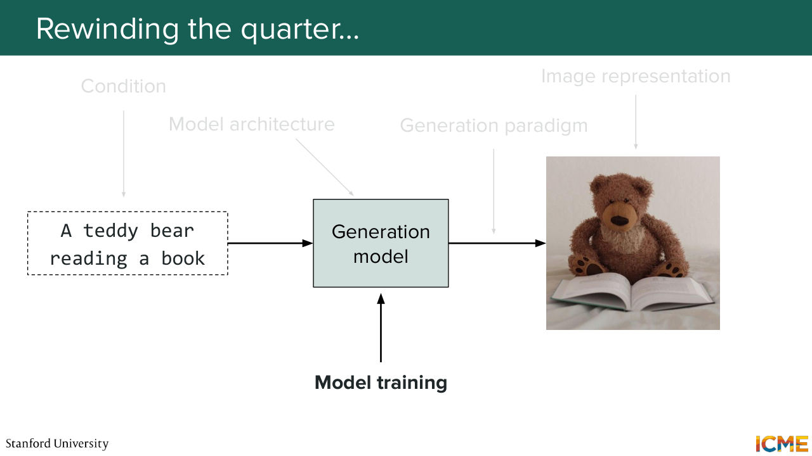
32:23 let's say, an area of the image, well, if you noise some of it, and if you have more chances to see the actual value, then when you look at the image, you will have an easier time to see what the image is about as opposed to if you have a lower resolution image. So if you have pixels that are noised, then you have fewer chances of seeing
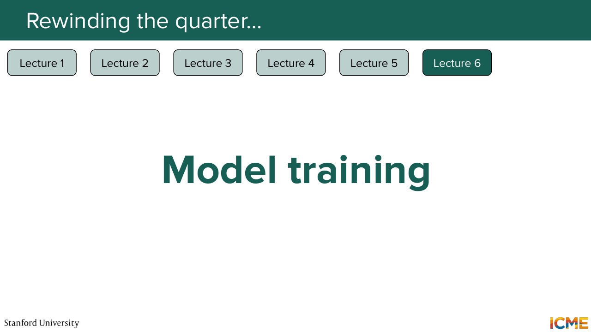
32:49 the underlying true pixel value-- denoise pixel value.
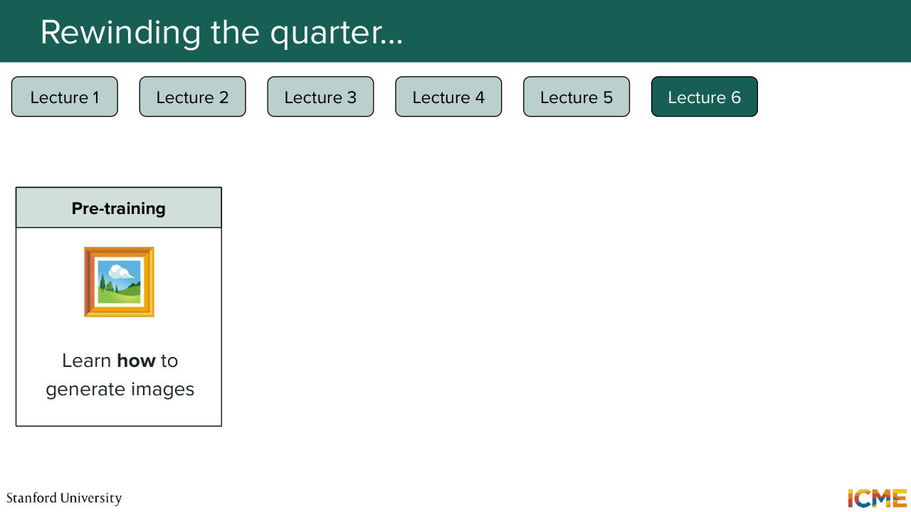
32:54 And so with that, we saw that there are a few stages to a typical model training
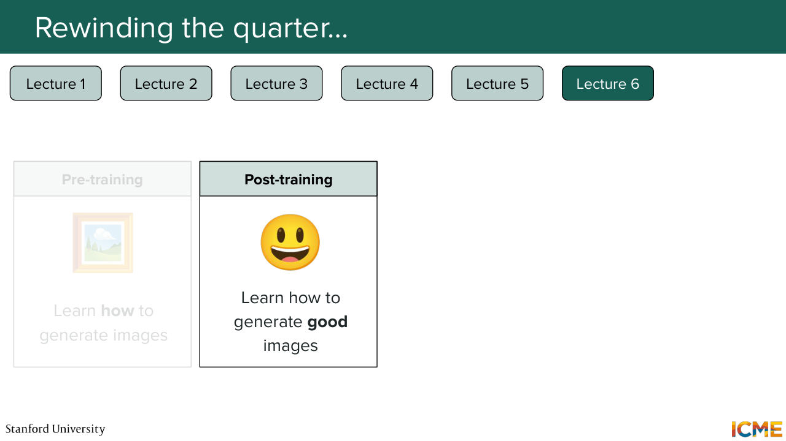
33:01 process, the first one being pre-training, which is learning how to generate images. And so here you have-- so it's the most time consuming and expensive part of the whole pipeline, because you need to come up with a very big corpus of images that encompasses all of the possible images that you want to generate.
33:26 And it needs to be certain quality, and you need to have good mixtures and so on. So a lot of effort is put into having a pre-trained data that is reflective of the way you want your image generation to learn. And after that, we saw that once you
33:52 get an image generation model that knows how to generate images, what you wanted to do is to generate good images. And in particular, good here can be something that people say just in the aesthetics term. So you want your image to look good, but you also want your image generation model know how to generate images in your field of interest
34:21 or in your task of interest. So, for instance, if you have an image generation model that has been pre-trained on, let's say, nature and then, I don't know, houses, but if you want that model to generate images, let's say, teddy bears, so what you want is, for instance, to have an extension of that training that we call continued training, where you teach your model how
34:50 to generate images in your set of images of interest, which
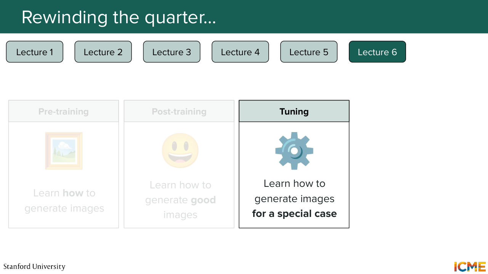
34:56 here can be teddy bears. And what we saw was that a third optional step could be the tuning step, where you could have a situation where you want to generate images of one particular subject, of one particular person many times. So if you are in that situation, what you want is to tweak your model in a way that will remember
35:30 what you wanted to generate. And we saw DreamBooth as a way for us to do that. So the idea was to gather a set of images of 5 to 10 typically that contains who you want to depict. And what you do is you train your model to generate images that contain that specific person or that specific object, while having a rare token as input.
36:04 So what you are teaching your model was to rewire its brain towards generating something when it saw a specific token. And given that these models can be pretty big, we saw that there were also techniques to tune, not all weights, but a subset of the weights through this technique called LoRA-- low-rank adaptation.
36:34 And once you did that-- let's suppose you did either the first two or all three of the steps. What you want is to now deploy your model to production. So what you want is to have a model that does not cost you a lot and also does not take a lot of time to make generations. So we saw a bunch of methods that
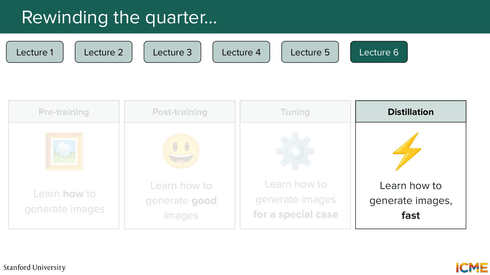
36:58 were aimed at shortening the number of steps that were needed for you to generate samples. So this category of methods is called distillation. So we saw a number of methods. So I would encourage you to look at that lecture. So there was progressive distillation as one example, but some others as well.
37:24 And then finally, last week, what we said was great, we can do all of this. But we have not seen how we could evaluate how our images, how good they were. And if you don't know how to do that, well, you don't where to put your efforts. So you need to know how well you're doing,
37:48 which is why lecture 7 was focused on evaluating images and in particular, how good those images were. So we saw that the most common way people evaluate images on things like leaderboards is by having images generated
38:13 by the models that are in your leaderboards and by having pairwise comparisons between them.
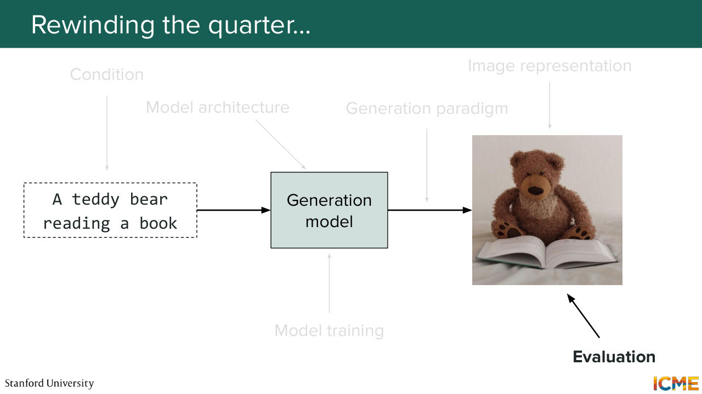
38:21 And we saw that there was a particular way of measuring performance that took into consideration the history of each model. And by history, I mean how people rated that model. And the reason for that is we saw that if you were to win against a weak week model, it is not the same thing as if you were to win against a strong model.
38:54 So you want to take into consideration how strong your opponent is, otherwise, a metric like the win rates would be very dependent on who you are making your comparisons with. And we saw this metric called the Elo rating, Elo score that looked at this in the following way. So if you were to rate different models, so you have a ratings,
39:23 let's call it R, that quantifies how good each model is. So in order for you to-- let's suppose you have a new model. You want to compute its rating. So what you would do is compare that new model to, let's say, a model that is part of the list. And you would use the rating of the models
39:52 to quantify how good they are, and take that into consideration in order to find the rating of the new model. So how do you do that? Well, the idea is quite simple. So the ratings quantify how good models are. So from that quantity, what you can do is to compute what you expect will happen.
40:20 So for instance, if you have a strong model and a weak model, well, what you expect is the strong model to win. So you compute a quantity which is the expected score, which is a function of these two ratings. And you compare that with the actual score. And the difference between that, which is here, delta, tells you how surprised you are.
40:47 So if you won against a strong model, then you want your delta to be high. And if you won against a weak model, then it's not a lot of signal for you because almost everyone
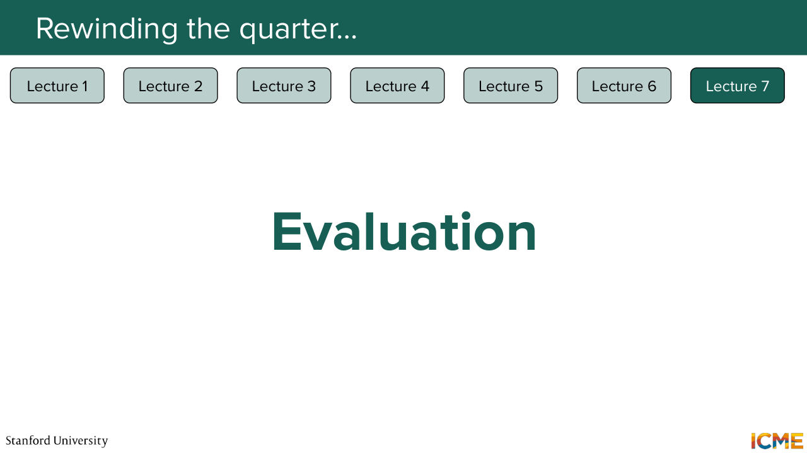
41:00 wins against that weak model. So delta would be lower. So all of that to say that you will come across the Elo
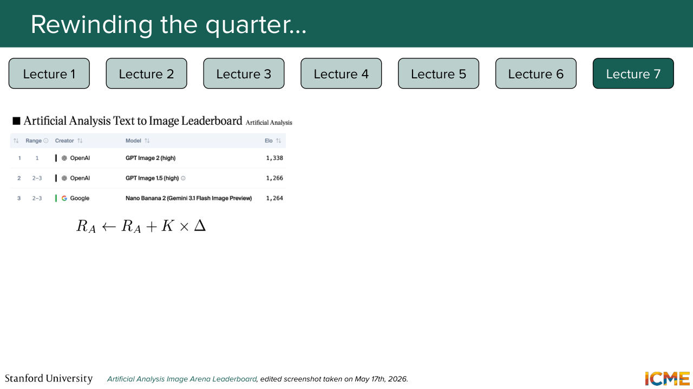
41:09 score quite a lot. And I just want you to remember that the Elo score is
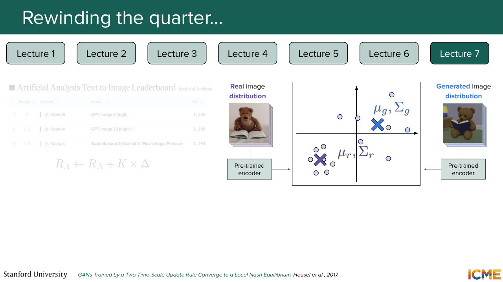
41:15 a smart way of computing pairwise comparisons
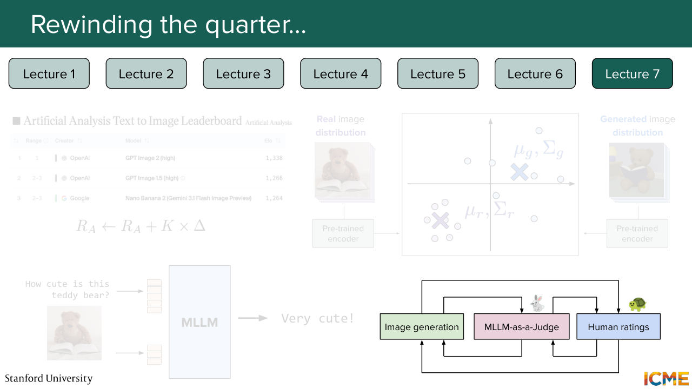
41:21 by taking into consideration how strong your opponent is, if you compare model A and model B. Cool. But not everyone has the luxury of having human ratings for everything they do. So that's why we also have a bunch of automated metrics. So we looked at one that was quite popular nowadays, which is called the FID score-- Fréchet inception distance. So what this score does is it computes
41:57 the distance between the distribution of your generated images and the distribution of real images. And the idea is if these distributions are far, then it means that your generated images, they don't look like real images. And we saw that the FID score-- so I didn't put the formula here, but it is something that is derived from a more general formulation.
42:30 And here, the actual formula is derived considering that these two distributions are considered as Gaussian. So that's the assumption that we're doing when we're computing this metric. And we saw that the lower this metric was, the better it was. And of course, it's a proxy. So it's not a perfect metric.
42:57 And then we looked at more clever ways of obtaining scores, in particular, by leveraging these newer models. So here, MLLM, which stands for multi-modal large language models that are able to both take texts, but also images as input. So you could very well say, you have this image. You have this input prompt.
43:27 Well, tell me how it looks like or how good that is. Then you could obtain some given scores. And we saw that you also had a way to leverage these models in order for you to not have to ask your humans to rate your images, but to ask your MLLM as a judge to rate them for you.
43:51 You could have a tighter loop that would allow you to make iterations faster and have human ratings when you feel like your model is good enough for you to take that step. And this was CME 296. So you see that in order for us to generate an image from a prompt, there is a lot that goes underneath.
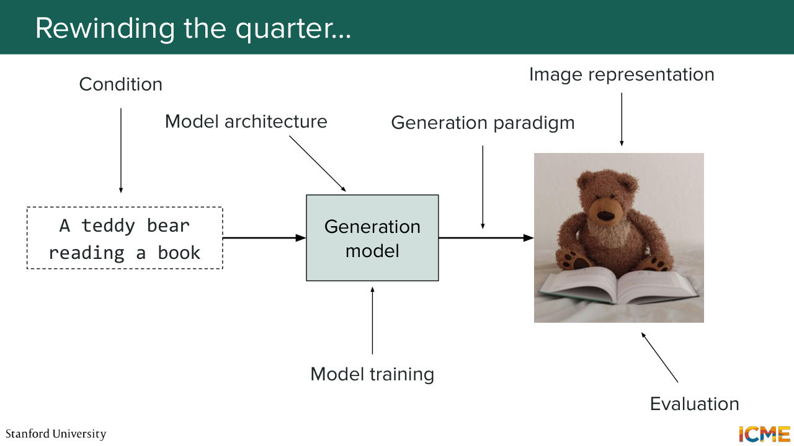
44:18 And this is what the whole lectures 1 to 7 were about.
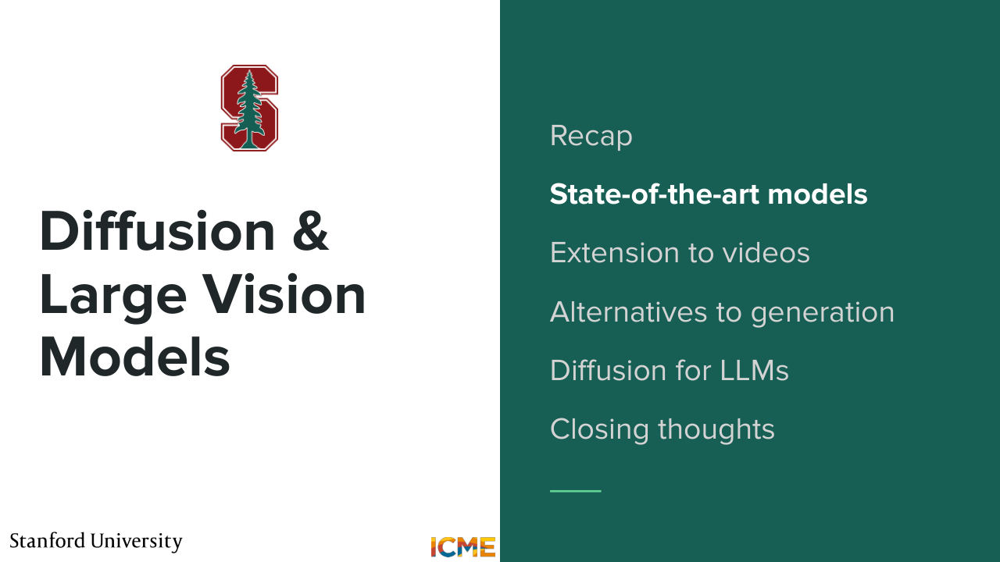
44:28 Cool. So now you finish this class after this lecture and you're like, OK, now I know all of this. And so what? So I wanted to talk to you about the state of the art models that
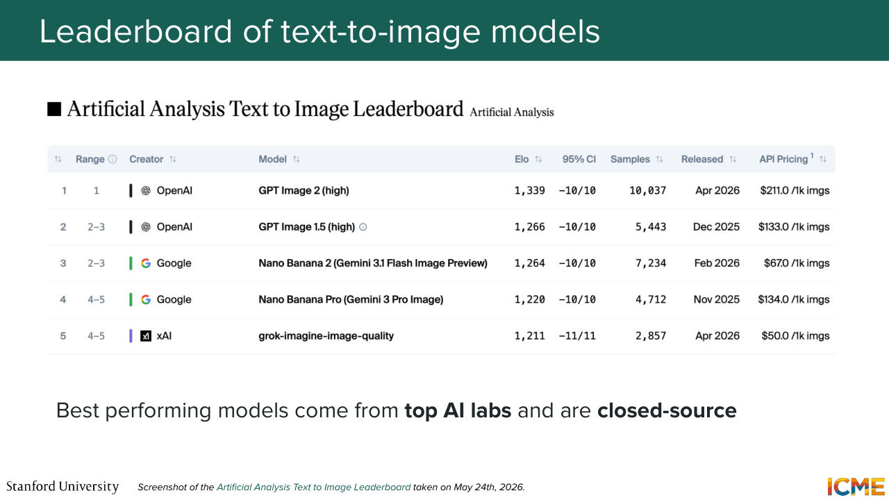
44:41 were out there. So what we did was just go to a popular arena that ranks the best models out there. So there's a leaderboard. And as you can see, there is the Elo score that is used to determine those ranks. And I just wanted for us to look at which models were the best and whether they were also using the methods that we saw in this class or not.
45:15 So let's start with the best models out there, and we see that we have the first two ranks that are from OpenAI. So GPT Image. And then we have two models from Google. And then the fourth-- sorry, the fifth model is from xAI. So it's all closed-source models from top AI labs. The problem with those models is we don't how they work because they're not publishing any reports.
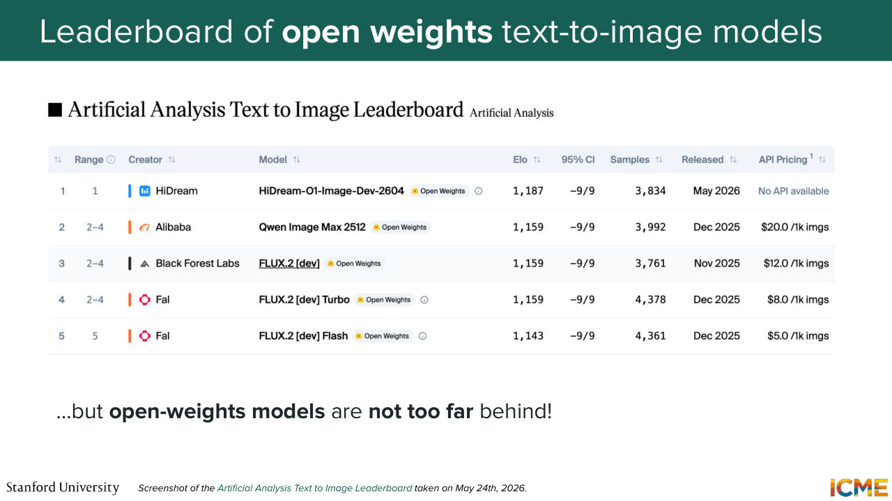
45:44 So there's not a lot I can tell you. But that leaderboard also ranks open weight models that have technical reports that are published that are public and available. So it's a screenshot that dates from five days ago. And we see that the highest ranked model is from a company called HiDream. So it's HiDream-01-Image number one.
46:16 And then you have Qwen Image that we saw in lecture 5,
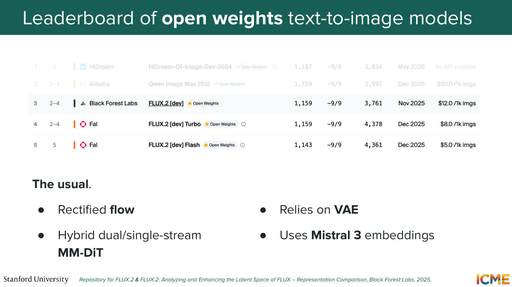
46:21 when we talked about the multi-modal diffusion transformer. And then the ranks three to five are from this model from Black Forest Lab called FLUX 2. And what I wanted us to do was to go through these models and see what they were made of. So let's start with the last ones, the FLUX 2 models.
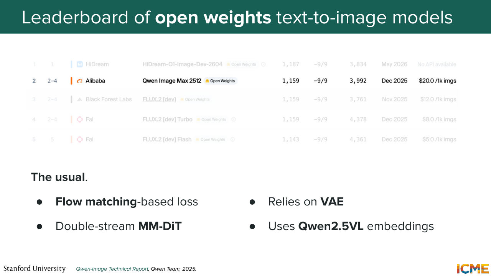
46:47 So they're based on rectified flow, which, as I mentioned, is a derivative of flow matching. So something that we know. Their architecture is based on the diffusion transformer. But in particular, what our architecture is based on is a combination of single stream
47:14 and double-stream diffusion transformer. So this is also something that we saw. So they rely on a VAE to make sure that the latent space is compact and allows you to learn easily. So that's also something that we saw. And we also happen to have some text encoder that was pre-trained. And here. It's a Mistral 3, that is used to generate the embeddings.
47:45 So up until now, the usual. Let's go to the model number 2. So Qwen Image. The loss is a flow matching loss. So also something that we know. So the architecture is a multi-modal diffusion transformer. And it also relies on a VAE. And the text embeddings are based on Qwen.
48:15 Also the usual. Now let's look at the top-ranked model, which by the way,
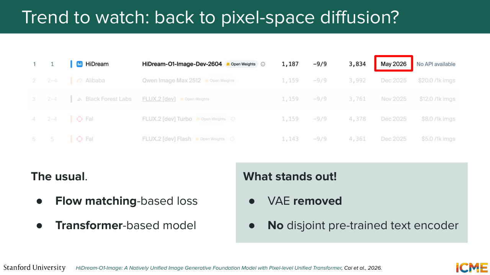
48:23 was published, I think, two weeks ago. So it's extremely recent. So flow matching loss also similar to what we saw. The model is not exactly a multi-modal diffusion transformer, but it's something that is based on the transformer. So also very similar. But turns out that there is no more VAE. And there is no pre-trained text encoder.
49:01 So does that mean that what we learned was not true? What's going on? So let's see how that relates to what we learned. So that paper, what it does is it actually performs the generation, not in a latent space, but in pixel space.
49:25 And now you may think, well, how is the dimensionality going? Because it's much higher than a latent space. So that's the first question. And then the second question is pixel space is much harder for you to learn because we saw that in the space, valid images in the pixel space are more isolated. They're not smooth distribution.
49:53 Well, here is my interpretation. So first of all, for the dimensionality. So it turns out that the patch size that the paper uses is not the traditional 2 by 2 that we're used to for latent space. It's actually a much bigger one. So it's a 32 by 32. So computationally here, the idea
50:20 is to make it tractable by just having bigger patches. And then when it comes to learnability, well, the fact of not having an easy space to learn from is just shifting the effort that needs to happen over to the diffusion-based transformer. And so what I found very interesting with this paper was even if you make your problem harder for your diffusion
50:54 transformer or your transformer-based model, well, you can still have amazing results, if you scale it well enough. Because that model, well, turns out that it was scaled, I believe, to 8 billion and then also to 200 billion parameters, which is huge for image generation models. And so what I wanted to say was that the space is fast moving,
51:20 that what we talked about still holds true, but that the trade off between making it easier for the transformer to learn versus doing it in the raw space is still something that was being figured out because there is something that I have not mentioned, which is when you learn the latent space, so you're making it easier for your model to learn. You're having a more compact space.
51:52 But then the main thing that you're losing is fidelity, because it's a lossy operation for you to operate in a space that is not your original space. So when you know train your VAE, you just hope that you will reconstruct things truthfully. But it is not always the case. And it just turns out that this paper shows that the downside of the VAE
52:24 are such that we could maybe work without it, if you scale things in a big enough way. So I found that interesting. And I think it's a newer trend of doing things without VAEs. So I think it's just good for us to keep an eye on this. So again, this paper was published a few weeks ago. I don't want to make general statements because maybe in a couple of months, then we will see maybe
52:53 that the VAE is necessary. But I think this is a part that is worth watching. Cool. So any questions on that? Yeah. Oh, yeah. So the question is, what is the alternative to pre-trained encoder? So the alternative is to just learn it yourself. So instead of having a pre-trained encoder
53:19 computing the embeddings for you, what you do is you take the text as input. What you do is you just tokenize it. So you divide it into arbitrary units of text. And you learn the representation as part of your training. And so there's one thing I didn't say here, but they're not using a pre-trained text encoder
53:45 to do that, but they're doing some kind of prompt enhancement that allows you to be more explicit about the input prompt, because you may have a prompt like a teddy bear is reading. But in order to generate a very good image, you need to know, for instance, how the lighting should be, what camera position should be, and so on. And so that piece is also making the job of the text encoder
54:16 easier because it just explicits what you need to have as condition. Yeah. So the question is, if there is no disjoint text encoder, how are they able to understand text? So here the key word is pre-trained. So there's still a text encoder, but it's just not something that you take off the shelf.
54:42 It is something that you train yourself as part of the training.
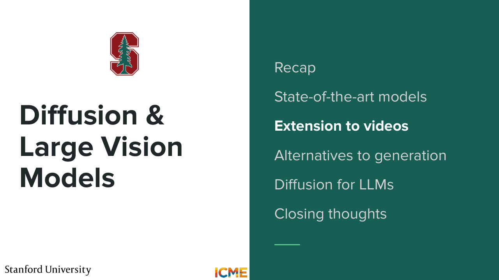
54:49 OK, cool. So this concludes part 1, which was around recapping
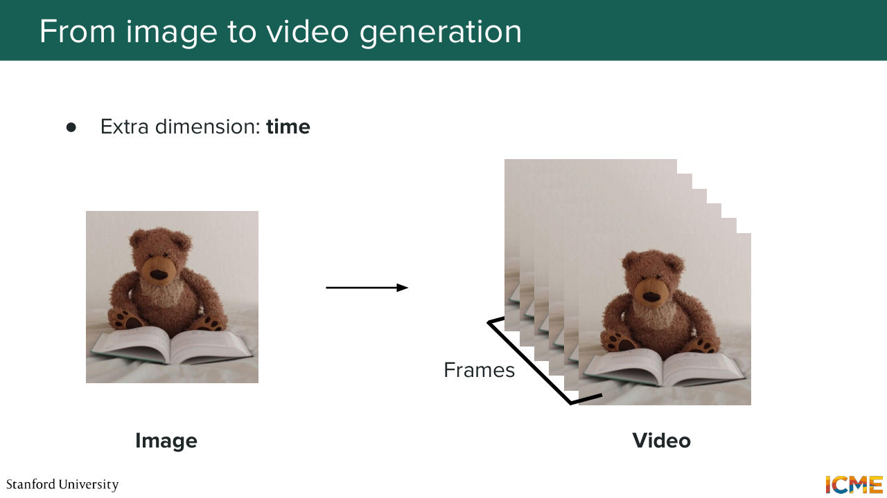
54:55 what we did up until now. So now that we know all of this, what I want us to do
55:05 is to see how adjacent fields can benefit from what we have learned. And a very natural extension that I want to talk to you about is videos. So if you think about it, videos are nothing else than a sequence of frames which are images. So you just have an extra dimension. So here you go from a 2D image to a 3D image across time.
55:41 And the question now for us is, what should we have in mind when we want to build a video generation model? And what are the things we can use from what we have learned in order for us to be able to do that? So the first thing that I want to tell you is there is an extra dimension, which is time. The second thing that I want to talk to you about is that in a video, you need to make sure that there is some temporal
56:14 consistency, as in you cannot go from one frame to the other in a way that completely changes what you're looking at. But you also need to make sure that whoever is being depicted in your frames do not have suddenly things that they did not have. So, for instance, if you're looking at a video of a teddy bear reading, you don't want that teddy bear to all of a sudden acquire a hat
56:43 and sunglasses at t plus 1, but then at t not have any of those. So this is an extra thing that you need to worry about. So for images, you want it to generate something that was plausible.
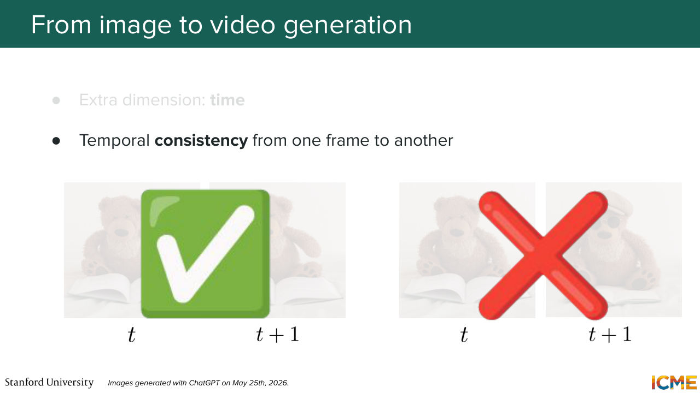
57:01 For videos, you need to generate something that looks plausible at a given time t, but you also need to make sure that the way frames are sequenced is also making sense. So you need to have that temporal consistency. And of course, you need to make computations tractable because here, as you can imagine, if we go the route of representing our input
57:30 as a sequence of 2D images, well, the dimension just got increased by a factor of t, which is the time. And so you need to make sure that whatever you're doing is making things still tractable. And of course, metrics as well. And well, I'll just get you the spoiler. So we still leverage the metrics that we have seen for images,
57:59 but we just extend them for videos. So the Fréchet inception distance-- FID-- is something that you may also see in the video worlds where the only thing that changes is the representation of the quantities that you're dealing with. So instead of having the Inception network to represent
58:23 your image, what you're doing is you're using a pre-trained encoder that would represent your videos. And you have, for instance, this metric called the Fréchet video distance, that tells you how far apart your generated videos are from real ones using a similar method. But I want to call out one thing. These metrics are just proxies. So it's always good to have human in the loop.
58:58 So now let's see how we can handle just generating videos by going through specific parts of the architecture that we may need to change. So if you think about it, an image generation model, a traditional image generation model
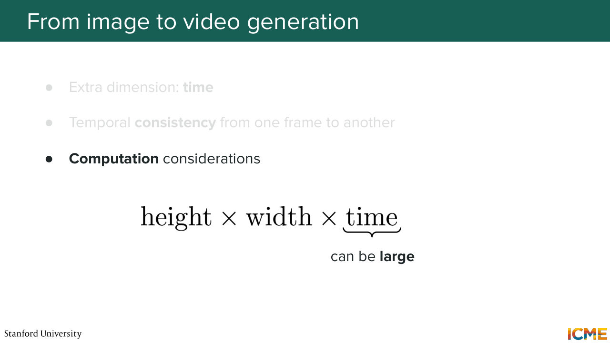
59:19 is a DIT-based model operating in a latent space. So you have a VAE that compresses your input into some latent space. And then you obtain, let's say, the final prediction that you then decode back in your initial space. Well, the same thing is happening for videos. So here, you not only are compressing
59:51 from a spatial perspective, you're also performing a temporal compression. So do you remember when we talked about f, which was the ratio of the heights in your initial space over the height in your latent space? Do you remember? So maybe I'll just quickly-- so we had this pixel space.
1:00:17 And then we have the latent space here. And then you have H and then h here. So we had f, the spatial compression, which was just the ratio of big H over little h. And that ratio is typically on the order of 8 for spatial compression. Here what you also want to do is to compress your input
1:00:46 along the time dimension as well. So, why do you want to do that? Well, the first thing is you want to make sure your problem is tractable from a dimensionality perspective. But then the second reason is when you compress things in a smaller space, what you're assuming
1:01:10 is you have redundant information. So spatially, we saw that we have spatial correlation, meaning around some pixels, you have pixels of the similar value. So you have redundant information. Well, it's the same along the time axis as well. Because you can very well imagine that if you go through the frames of a video, two consecutive frames will have a lot of the same information.
1:01:42 So it would also make sense for you to compress things also along the time axis. And so here, this compression ratio, which we saw was for space, is also something that we have along the time dimension. And as a result, your latent space is composed, not of space latent, but of space time latent.
1:02:12 So what that means is the quantities represent, not only things that are within a given image, but also with respect to time. So there is one thing that you may find interesting, which is that the dimension over t is 1 plus t And then the latent space is of dimension 1 over t over 4.
1:02:41 But then you may ask, why the 1 plus? Why 1? And I would say it's a good question. It's also a question I ask myself. Well, it turns out that if you want to generate a video, you need to have a starting point. You need to have an initial frame. Well, that 1 is a way for us to consider the first frame
1:03:09 as being something special. It has a special place. It's the anchor frame. We want to make sure we're representing it as well as possible. And so the reason why we have the 1 plus is to represent that first frame, that anchor frame to its fullest extent, and then to use that as a way to continue the video in a way that is a natural continuation
1:03:38 of that first frame. Does that make sense? So by the way, we're going super quickly over a lot of things. So my goal is to just give you some pointers for if you're just interested, let's say, after today, and you want to just explore more, these are just some small little things. The second thing I wanted to talk about with respect
1:04:04 to the VAE is so as we said, it is not a 2D VAE. It's a 3D VAE, because it's operating also along the time dimension. So you will see that VAE is called a causal VAE. So why causal? So causal is because when you perform, let's say,
1:04:30 convolutions, which is typically what one of the operations that VAE contains, you perform your convolution in a symmetric manner. But here, what you want to do for a given frame is to not compute feature maps that are a function of future frames. You only want for that frame to be
1:04:58 a function of the same frame and the frames before. So that is why it's called a causal VAE. It's because the convolution is not like the symmetric one that you're thinking of. It's asymmetric. And the reason why people would do that is actually for several reasons. But one of the reasons is you don't want to go out of memory every time you do these things.
1:05:25 So what people do is sometimes they stream this encoding process. And if you make sure that a given frame is not dependent on the future frames, which by the way, the receptive field can widen if you have several convolution operations. So if you make sure that it only depends on that frame and the frames before, then,
1:05:48 computationally speaking, you can actually stream that encoding and decoding process. I'm just giving you reason why. And then the second thing that I wanted to talk about with respect to the video-- oh, yeah. You have a question? Great question. So the question is, why would you need frames before the last frame?
1:06:15 So let me give you an example. So let's suppose a teddy bear walks across the street. And the camera looks at that Teddy bear, and it sees a pedestrian that is coming this way. And then later on, that pedestrian comes back. So the information of who is going behind the teddy bear
1:06:42 is something that is important to you. You want to be able to capture things that makes your video consistent. So that temporal consistency, which is making sure you're not inventing objects or people in your video that may have happened in the past. So that's the reason why you want your receptive fields to not be one.
1:07:08 So you want to have some dependency on earlier frames compared to the last one. Does that answer your question? The question is yeah efficiency concerns. And yeah, I hear you. So there is something we'll discuss which is exactly what is happening in the latent space. So, of course, you cannot generate a video of very,
1:07:34 very big time t. So what people do is divide the generation into several parts, where you can generate a video of, let's say, a fixed length, and then take the last frame as the anchor frame to generate another video of, let's say, another fixed length. So one way for you to make this more tractable is to just take the last frame of the video
1:08:01 that you generated as the first frame, and then continue later on along with some condition. So yeah. Yeah. So the question here is, how can you teach your model how to generate the next frame, given some conditions? So we're actually going to see that in the next slide. So this part is just about compressing the inputs,
1:08:28 but we're not yet generating the video. So we're going to see that in just one second. But yeah, great question. Cool. Any other questions? So I'll answer your question right now. The way we generate videos is within that latent space,
1:08:51 similar to how we do it for image generation, we have this DiT-based architecture that works from patches and that generates patches. The main difference from images is that these patches, they are not space patches. They're not spatial patches. They're space time patches. And what that means is as input, we have,
1:09:21 if you want something that represents some part of the, let's say, image, it's not really image because you're in the latent space across time. And in order for you to think that you're doing a good job at producing a video that is consistent with oneself, one thing
1:09:47 that you can tell yourself when you're looking at that whole process is that within the DiT, you have the self-attention mechanism that allows your space time patches to interact with one another so that you're producing an output that is coherent across space, but also across time. So I think your question also involved some amount of, how can you make sure that it reflects causality?
1:10:19 So can you expand on what you mean by causality? So the question is, how can you make sure you have some causality versus correlation? I think at the end of the day, what you're doing is you're training your model on some data, and the resulting model is just reflecting the patterns that it has seen at training time. So if you feed it things that reflect, for instance, if you
1:10:45 put a book on a table, and there's some dust that goes away, these are the patterns that your model will also learn. So I think at the end of the day, it all goes back to what kind of data you put inside. So that's how I would think about it. Yeah. Yeah. So the question is, well, we know in LLMs, we have a masked self-attention that makes things causal.
1:11:14 Maybe there is something that we can reuse here. Well, in the image generation world, we're making sure that all parts of the image, they interact with one another. And this is actually something that we also have here, the main reason being that you want some consistency between every part of your video. And so for that reason, people typically
1:11:41 keep the full self-attention. But then at the end of the day, you
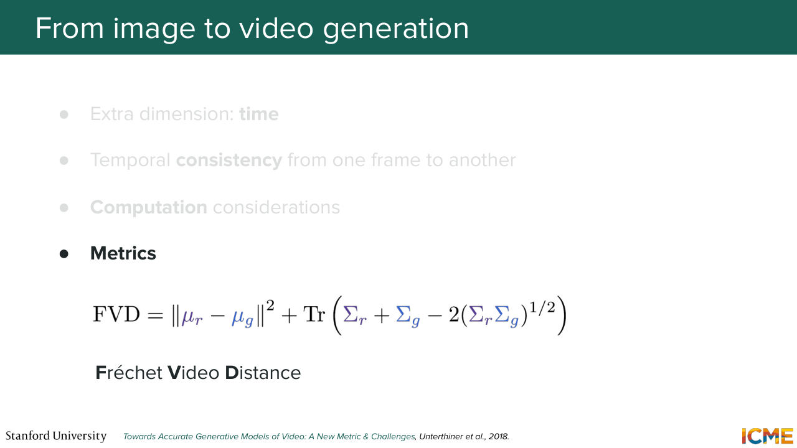
1:11:46 need to try it out and see how it works. [LAUGHS] But typically people keep the self-attention. Yeah. OK, great. So that model that we just saw is a model that is open weights. It's called Wan. There are actually a multiple models out there. And this list of readings is by no means comprehensive.
1:12:11 So in case you're interested, feel free to just take a look at those. So I know Wan is one such model. I believe there's also LTX as well. Highly recommend reading the papers. I would say that given the fact that you know how image generation models work, it's now much, much easier to understand these papers.
1:12:36 So hopefully that's going to be helpful. Cool. So video generation was once adjacent fields that I wanted us to touch on. The second topic that I wanted us to talk about
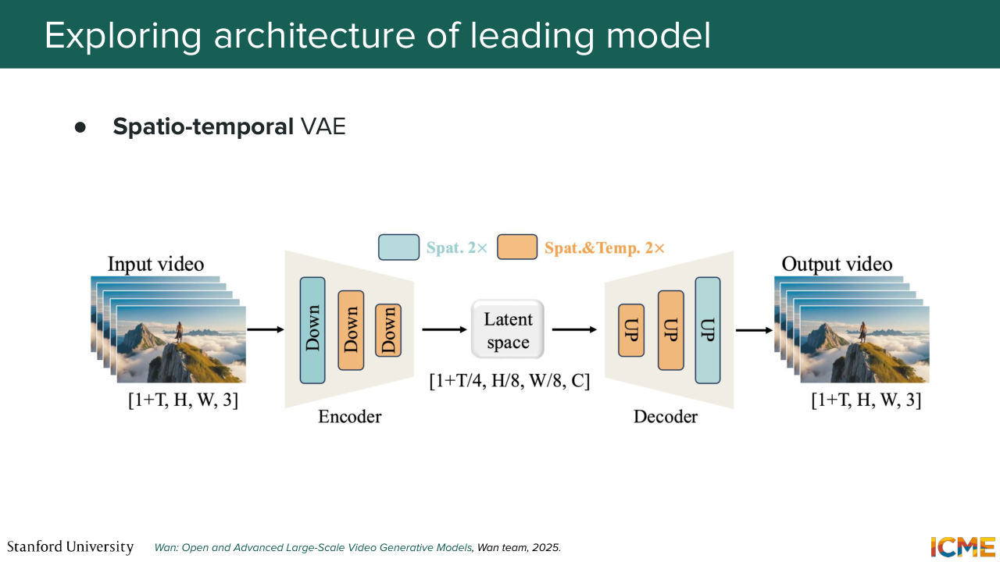
Shown briefly — discussed together with the adjacent slides.
Shown briefly — discussed together with the adjacent slides.
Shown briefly — discussed together with the adjacent slides.
Shown briefly — discussed together with the adjacent slides.
1:12:53 is image editing. So let's imagine that you have an image,
1:13:02 and what you want to do is to edit that image. So you can say, make this image black and white.
1:13:10 So you could very well use what we have learned, which is you put that into your text image to image model. So ti to i. So, how do you do that? Well, you represent your condition, which is the text and the image as part of, let's say, your MMDiT, and you inject that. And you can obtain an output image. Well, the problem here is that you're
1:13:38 considering this problem a from scratch generation problem. So you're telling your model, make this image black and white. And what you're expecting is that exact same image, but black and white. And you can just ask yourself, is it actually optimized to what I'm doing? So what I'm doing is I'm asking a model to generate a whole thing from scratch.
1:14:05 And I have no guarantee that it's the same image. So the question here, is there a better way for image editing tasks to edit your image? Specifically, in cases where you want the input image to be preserved, is there a better way to edit those images than to consider this from scratch generation problem? Well, so in this case, you see that the black and white image had the teddy bear raise its right arm.
1:14:41 And this is not what you want. So people have been thinking about this problem from another angle. So what they're saying is instead of considering this as an image generation problem, let's actually think about this problem as an image editing problem. And by editing, I mean, in the sense of performing
1:15:09 some operations on the image. So one idea could be to have your image, to have your prompt be fed into a VLM. So vision language model, which is an MLLM-- multimodal large language model. In order for you to receive live editing actions that
1:15:39 could be maybe decrease the brightness by, I don't know, 50%, just increase the luminosity by x percent that you could then interact with an editing software, like Photoshop, in order to get your final image. So the nice thing with this approach is, well, first of all,
1:16:08 you have some guarantee that you are preserving your initial image, if, let's say, you're constraining the sets of actions that you're taking to, let's say, an allow list of actions that here can only be harmless, like coloring actions. But one challenge is for your VLM to know the set of possible actions well enough for the editing action to actually make sense.
1:16:42 So that's the main challenge. And so that's why some people-- I mean, when I say some people, a lot of people are trying to think about how to do this. So there's a very short list of papers that try to resolve that. But there is one method that I want to mention here, which is how do we want our outputs-- like, how can we make sure that our output is something that is aligned with something that makes sense? Well, a possible method is to look at the logs of people
1:17:21 who are actually making edits. So let's assume you go to your favorite editing software. You have an input image. And then you make some edits, and then you have a final image. Well, the sequence of edits that you made is something that your model can learn from. Well, the only thing that your model doesn't really know is what your intent was, because you typically
1:17:47 don't tell your editing software, well, I want to make my image more like this. You don't say that. So these papers, so most of them, what they're trying to do is to come up with pairs of initial image edited image, along with the user intent that is inferred by these two images,
1:18:16 let's say, from annotators. And what they're doing is they're tuning the VLM on these golden sets in order to have it behave more like something that would tell you actions that would correspond to your intent. So that's why you have papers on this. It's just because that in order for your model to learn how to do these things, you need to do some work in terms of which data to use,
1:18:48 how you want to train these things. And that's why they're here. So I highly recommend reading them. It's an open area of research. If you take a look at the years they were published, I mean, they were published 2024, 2025, 2026. So extremely hot. Any questions? Yeah. So the question is, how can the loss reflect the user intent?
1:19:16 Well, the thing is you are not using the loss to infer the user intent. So one possible way of inferring user intent is to feed an off-the-shelf VLM an initial image and an output image and to tell your VLM, well, tell me what changed between these two images in order to infer this box, make this image black and white.
1:19:47 So I'll give you an example. If we feed a VLM the colored image and the black and white image, and we ask the VLM, well, come up with something that tells me what changed between this and that image, it gives you the user intent. And then what you can do is use that user intent along
1:20:11 with the initial image. And then you can, of course, collect the editing action that the user took and tune your VLM to output these editing actions given this input. So that's one popular way I've been seeing these papers. [INAUDIBLE] Yeah. Cool.
1:20:35 Great. So now we're in the last part of what I wanted to talk to you about. And that part is actually an area that I think is a very, very hot area, which is how can we apply
1:20:49 diffusion to the field of LLMs? So as you know, there has been a lot of transfer of knowledge from what has worked well in the text world to the vision world. So in the text world, as you know, in 2017, we had the transformer that was initially designed for translation tasks. So let's suppose you want to translate from English to French.
1:21:17 What you do is you use this transformer to have some, let's say, English text as inputs in order to have a generated French text as output. And as you know, well, people in the vision world, they adapted the architecture in a way that leverages some of the scalability benefits that the transformer brings to the vision world.
1:21:44 And in particular, there is one architecture we have spent a bunch of time on, which is the diffusion transformer, which relies on that. So that's one thing. The next thing is something we've briefly
1:21:56 talked about during, I believe, lecture 6, which is around post-training approaches, and in particular, the fact of injecting negative signals into your model. So there is this tuning method called DPO, which stands for direct preference optimization from the LLM world, that was something that was
1:22:21 adapted to the diffusion world. So that's one. And another one that you may be aware of
1:22:27 is GRPO, which now is widely in use in LLMs that is also something that has been something that people have experimented with in the vision world with flow GRPO. So now you can ask yourself, OK, text has given so much to us. What can we give back to text? Well, I know this class is not about text, so I will not
1:22:55 go into the details. But one thing I want to talk about is that in the text world, we are doing things mostly in an autoregressive way, a little bit like when you and I, when we talk, what we do is we generate one word at a time. And whatever comes out is a function of whatever came before. Just to illustrate this, so you have your LLM, which here we say
1:23:23 is autoregressive. Let's call it an ARM LLM, autoregressive model. So here we have, let's say, a token that says, OK, we're starting the sentence. So we say, A. And then A goes into the model along with everything that came before and a teddy. And we repeat it again and again. Teddy bear is reading. We're generating sentences by sequentially inputting
1:23:53 tokens one at a time and having the model look at anything that it has generated before in order to generate the next token. Well, the problem with that is that if your output sentence or your output response is long, then
1:24:15 you will take a lot of time outputting that response because the number of iterations here is in awe of the number of tokens that you output. So in particular, I'm not sure if you do a lot of coding on a day-to-day basis, but let's suppose you want to, let's say, code a huge thing, like 1,000 lines of code. Well, what that model is doing is really
1:24:43 outputting things one at a time. It takes a long time. And of course, you want this to be quick. Well, one idea is to borrow this idea of diffusion for text. So here what you can think of is instead of doing things one at a time, how about we do everything at once. And we start from noise. And what we do is we progressively denoise in order
1:25:21 to obtain our final output. Why wouldn't we do that? So, by the way, it sounds very non-natural because I think you're very used to saying things in a sequential way. But one analogy I want to point out here is let's suppose you're writing a speech.
1:25:49 So first of all, I'm not sure if you've ever written a speech. But if you were to write a speech, you typically don't write things in a very sequential way. You first start with a draft. You have some skeleton of the bullet points you want to talk about. And then what you do is you refine-- go from coarse to fine grained. So what I'm saying is this idea of doing everything at once, something that starts from noise up to clean,
1:26:17 although it's not natural, it is not completely unreasonable either. Do you agree with what I'm saying? Yeah? So let's suppose if we do that, then what we would do is reduce the complexity from having the number of iterations
1:26:40 being in awe of number of output tokens to being in awe
1:26:45 of the steps of diffusion. So let's see how we want to do that. So let's assume we take text with random noise. And by the way, I'm not defining noise just yet, but just assume that the text is noise in a way that we'll see later. Let's suppose we have a diffusion-based LLM. So what we're saying is that we're having this text with less and less noise up until having
1:27:16 the cleaned text exactly in the same way we have done for images.
1:27:22 So I just want to make sure this analogy is very clear. Here, we're denoising the whole input text in the same way
1:27:33 that we're denoising the whole image all at once. Well, a natural question is we have seen that we can think of noise in the image world as Gaussian noise. But for text, it's a little bit trickier. And here's the reason. In the text world, things are discrete. So you have words. You have tokens.
1:27:58 You have this. You have that. You're not in a continuous world. So in the image world, you would represent your noise with a continuous multivariate variable, typically Gaussian noise. But how would you do with text? So one idea you can have is let's just throw whatever token we have. That could be one option. Well, the problem is each token has a semantic meaning.
1:28:29 And so if you just take any token and you put it as a way to noise your input, then you may make your input have a meaning that is not a meaning you may want your input to have. So for that reason, one thing that the field is starting to align on, which I believe is most common thing
1:29:00 is to have an actual dedicated token, typically a masked token that would just represent a text token that you
1:29:10 would not know of. So a noised text token. So let's assume you do that. Then how would we apply what we have seen so far? Well, we have seen that for training-- so I will spare you all the mathematical derivations which some of these papers they go into. We will not go into that right now. But let's assume that we want to mimic the training that we
1:29:38 have done for images. How would we do that? Well, we would take a clean sentence, as in an unmasked sentence. And what we would do is to corrupt the text according to a noise level. And so here, what does that mean? That means that we would have, let's say, a t percent chance.
1:30:02 Let's suppose t equals 0.5-- a 50% chance of a token in that sentence being masked. So what we're saying is let's suppose t equal to 0.5. We're masking 50% of the tokens. And then our training strategy can be to reconstruct the tokens that were masked as a function of whatever was in the input that
1:30:33 was not masked. That can be your training objective. So I know this is not a text class, but for those of you who know about Bert, who's an encoder-only architecture, it also has something that is similar as a pre-training task. The only difference is here, the masking scheme
1:31:00 is done with respect to a noise level that can change, that can vary.
1:31:05 So you can have t, like a lot of noise. So almost everything masked versus a little bit
1:31:10 masked, whereas for Bert, it's always a certain amount of masked token.
1:31:16 I just want to call that out. So let's suppose you have that. Then what you're doing is you're teaching your model
1:31:26 to fill the blanks. Well, now how would you go about actually using such a model at inference time? So what you would do is same as what we did for images. Start with completely noised inputs. So here a sequence full of masked token. And then what you would do is just predict what would be hiding behind those masked tokens
1:31:56 all at once. But then you want to make sure that you have enough buffer for you to make corrections. So you may want to revise some tokens that you have predicted. So the field has several methods to do that, one of which is just remasking some tokens in a random way. So some other methods, they're mask tokens with respect to some confidence scores.
1:32:27 For instance, if you have a token that you're unmasking that you're not very sure of, then you may want to just do another try. So here, you would take some tokens that, let's say, you're not sure of and remask them. And what you would do is to take that new sequence and perform the same operation, meaning trying to see who is behind that masked token.
1:32:58 And you do that again and again until obtaining your final outputs.
1:33:05 So this is a very high-level way of how such a paradigm would work for text. Well, the good thing is there is very active research on it.
1:33:20 And so I was reading one of the papers. So you can have speeds up to 10x compared to the traditional autoregressive way of doing things. And that is particularly useful for tasks that requires you to have response as quick as possible. I know a lot of us are using some form of coding agents to do
1:33:46 our coding work these days. And I'm sure you also want your agent to finish as quickly as possible. Well, this paradigm would allow you to speed up that process significantly. And that is the reason why coding is a very good use case for that paradigm. So on the one hand for the speed,
1:34:12 but on the second hand also because in coding, you naturally have a way to be interested in filling in the middle kind of tasks. Because if you look at your code base, you're rarely always trying to generate things in a sequential way, in an autoregressive way. Sometimes you have a bunch of code and you just want to generate code, let's say, in the middle of two functions.
1:34:43 So for filling the middle tasks, that paradigm is actually better compared to autoregressive tasks. And we will not have time to go into details, but training is much more expensive,
1:34:58 particularly because in the traditional way, the way training works is you input your whole input and then what you're doing is you're training your model to predict the next token. And you can parallelize that very well. And this is unfortunately not something that you can do as well with the diffusion scheme.
1:35:25 And then the second thing is there are so many techniques that now are specific to how autoregressive models work that you would need to adapt. And there are also ways to combine the benefits of the two approaches. And for instance, block diffusion is an example of it. So I just wanted to leave you with these screenshots that just tells you of the many headlines that you
1:35:52 see around companies that are betting on this kind of technology.
1:35:57 So you have one such company called Inception that's actually founded by a professor at Stanford that's doing great. And I will just leave you with some suggested readings in case you want. And yeah. That's a great question. So the question is, how do you handle the variable output length? It's a great question. There are a few ways you can deal with that. But in practice, you indeed need to set
1:36:28 a given length for your output. And what you do is you stop whatever is after a special token called end of sentence token. Now, you can imagine cases where you're expecting a way bigger output, but you always have shorter outputs. So you're wasting a lot of computations. So that's why the last method I mentioned is something that can be useful. So block diffusion is one approach
1:36:57 that's being worked on where you're actually generating text block by block. So you're saying, OK, I'm going to generate, let's say, text of size, let's say, 100. And I'm going to use diffusion for that. And once you generate such an output, if you didn't finish the output, then you will use that as a condition to perform another round of diffusion for the second block
1:37:21 and so on and so forth until hitting an end of sentence token. So you touch a very good point, which is there are some differences between text and image. And the variable length is one of them. Yep. Yeah. [INAUDIBLE] So the question is, can you apply this to other discrete things other than text? I'm sure yes. We will not cover this today, but the ways people
1:37:50 have derived a tractable mathematical way to do that in the text world is something that involves transcribing things for discrete items. So I'm sure that it can be done. So I would actually highly recommend the first paper for you to get a sense of how people go from continuous to discrete. Yeah. Yeah, great question.
1:38:15 So the question is, can you not consider text as just being a screenshot of-- sorry, can you not consider text as being images of text and use some kind of OCR mechanism to process that? So I think it's definitely a great approach. There's actually a paper that was published a few months ago, DeepSeek OCR, that goes into that. I do think it's promising. I believe there is some savings with respect to how many tokens
1:38:40 that fills compared to how many tokens the actual text would fill in. So it's definitely another directions that I think is promising. Cool.
1:39:15 what is the typical price you have to pay for a perfect image? So I did the research for you.
1:39:21 I looked at major labs across the board, and it seems that the price per megapixel is of about $0.01. And I think that's going to be a useful metric to track over time to see the transition from this being a nice thing to a commodity. And of course, in reality, you wouldn't use these top models that I listed here, but more of a distilled version. But still, the upper bound gives a good view
1:39:52 of what people would be ready to pay for perfect quality. But then let's look at the kinds of challenges that could be tackled in the near term. So one thing that you notice is that images, they are doing well on themselves. But there are wins. In other modalities that you are inclined to include in order
1:40:18 to make generation more powerful. So one example that I have in mind is reasoning with images. So right now, anecdotally, if you ask for a diagram, you might get, with most models, a projection of what you asked on an image, which is a nice start. But it's not quite to the same level of refinement as the one you might get in the text world, where you ask a very precise question and the model
1:40:48 goes in searching for a meaning behind it and then projecting the exact answer in a concise way. So that seems like a good area of research. And then one topic that I've seen mentioned here. So for image editing use cases, it seems that we're being too hard on ourselves. We're doing the whole generation process that is, by nature,
1:41:14 unconstrained. And it seems we have an opportunity to use existing tools and wins in the text world, to use agents and existing human expertise to make editing happen in a constrained and tractable way. And then you have other use cases that could seem attractive to you all.
1:41:41 For example, learning about a class, you have several streams of information that come from texts, for example, the slides, the lecture video, and also the audio track. So while you can put pieces together one by one today,
1:41:58 it seems that there is an opportunity to bring all modalities to a consistent and coherent way and generate synthesis out of this. And in the longer run, you can see the consequences of all these benefits across industries that might be lagging because of some inertia factor. So you can think of so the field of robotics,
1:42:24 which seems to be the next area that could benefit from a revolution. So in text, we can generate text now like roughly solved images. Now we see great images roughly solved. And it seems we have an opportunity to feed all these learnings into the ingredients that could make robotics pick up, for example, environments, but also medicine and other desk jobs that might need their own process of approvals
1:42:54 to actually incorporate these wins. And maybe one day you won't need to come to lecture at all, and there will be some model gathering all the pieces for you in a coherent and pedagogic way. But I think we might still be far from that, because the fact of transmitting knowledge still
1:43:17 requires that taste and opinion that even the text world doesn't have. So I'm quite curious to see when that will happen. On the challenges side, so as we have seen, there are costs. And you can use distillation to alleviate a bit of that. But also, there is research on the hardware side where right now hardware is built on top of matrix multiplies. But as you have seen, the building block
1:43:46 of these days models is transformers and which relies on the concept of attention. And this attention has a very precise succession of operations that you could think of simplifying in an analog to numeric way. So this research paper could be one such pointer.
1:44:05 But also one other concern is the data quality side because today, you see all these images that are being generated that are out in the wild. So for the next generation of models, you might encounter the issue of not finding the true distribution p data, as we had assumed we had. And you have some papers that study the phenomenon of so-called model collapse, where
1:44:32 feeding what has been generated is a way for [AUDIO OUT].
1:44:38 So it looks like an echo chamber of mistakes that keep growing. And you see that at the end, if you represent embeddings of generations somewhere, you could clearly cluster the two. But how could we deal with that? So that's the kind of trust point which is key in our society. You want to be able to trust images. And now these days, with how similar
1:45:05 the true data distribution and generated images are, it seems like the border is becoming thin. So two ways to counter that. There is a norm called C2PA that has been gaining traction across software companies. So you might see this AI info popping in. It's because images that you create with AI have some of history attached to it that surfaces it.
1:45:32 So that could be one way to tackle the data collection quality issue that I mentioned before. But the thing is, if you take a screenshot of this, the concept of metadata disappears.
1:45:46 So are we doomed? Actually, no. There are other ways that we could employ to get around this. One example is watermarking with the example of SynthID from Google DeepMind that hides behind pixels patterns that reveal its origin. So beyond that, you also have the topic
1:46:09 of safety, which is very important. And creating images that are harmful to others
1:46:16 can have societal implications. So there is two parts to fixing this. One is on the model side where each company has their own policies to guard such generations. But also law is picking up. And what can you do from there? So let's say, this class ends. How can you be updated? So one suggestion is to take a look at the relevant archive
1:46:48 section on computer vision. But you might see that the number of submissions every day is of 100. So this might not be tractable. But on the other hand, some venues do a good job at distilling some of these works. Not all, but they can give you an idea of where the field is heading. And something else that I want to tell you is all these papers, we saw a bunch of formulas all over the place.
1:47:16 And sometimes you just want to know how they work. And a great pattern that we see in academia and in the industry is that there is code release of what was used to design a given method. So I highly encourage cloning the GitHub repo and playing with an AI assistant coding software on just getting you through the flow. And you will learn a ton just by doing that.
1:47:43 And beyond that, you have other resources. So on Twitter, you have a growing community of people
1:47:51 who talk about these topics. So if your For You page turns out to be in the clusters of these topics, you can get a lot of interesting recommendations. And another highlight is other Stanford courses that talk about vision, like 231n that I recommend. And there is this study guide that we
1:48:13 shared at the beginning of the class that we aim at keeping up to date across the years. But beyond all that, Afshine and I wanted to say that we are very happy to come here every Friday and teach this class and spend time with you. It has been a pleasure for us. And thank you, hidden heroes, who came here on the evenings and asked so many great questions. You were one of the reasons why the class was so dynamic
1:48:45 and generated insights that could then be useful to everyone. Thank you also to those watching online. Thank you for the great questions on Ed. And I hope the class was of value to you. And if you are around in the fall, Afshine and I will be teaching a similar class,
1:49:06 but in the text world where it will be our second edition. And if you are in for a new ride,
1:49:13 then we'd love to see you again. And our favorite teddy bear is coming one last time to wish you a great summer and all the best. Thank you. [APPLAUSE]